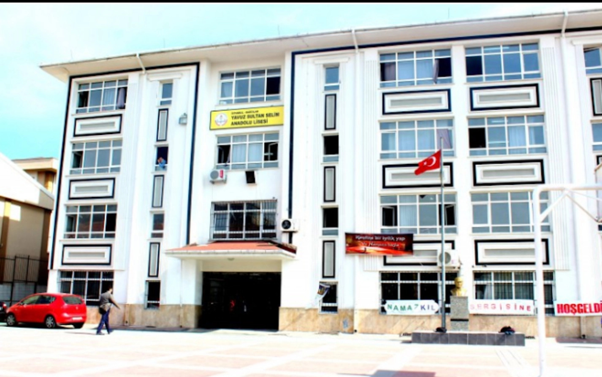

Caner AY
- Eğitim Geçmişim
- İlkokul : İstoç İlkokulu (2007-2014)
- Lise : Yavuz Sultan Selim Anadolu Lisesi(2014-2018)
- Üniversite:
İlkokul - Ortaokul (İstoç İlkokulu - Mahmutbey Lisesi)
İkokula başladığımda İstoç İlkokulunun bir binası yoktu. Hemen arkasında bulunan Mahmutbey Lisesinde 1. Sınıfımı okudum. 2. sınıftan itibaren okulun binası yapıldı. Ortakokul sonuna kadar okul hayatıma burada devam ettim.
Lise (Yavuz Sultan Selim Anadolu Lisesi)
2014-2018 yılını bu okulda okudum. 2014 yılından öncesinde bu lise meslek lisesiydi. Bizim senemizle birlikte anadolu lisesine geçiş yaptı. 2018 yılından sonra ise tekrardan meslek lisesine döndü.
Üniversite (SUBÜ - SAÜ)
2019-2021 Yılları arasında Sakarya Uygulamalı Bilimler Üniversitesi Hendek Meslek Yüksekokulunda Bilgisayar Programcılığı bölümünü bitirdim. Daha sonra Dikey Geçiş Sınavı ile Sakarya Üniversitesi Bilgisayar Mühendisliğine geçiş yaptım.